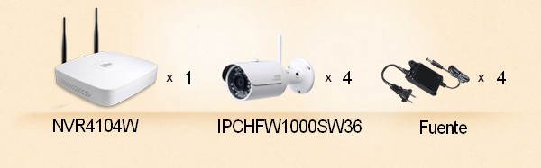
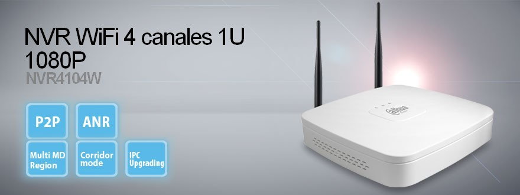
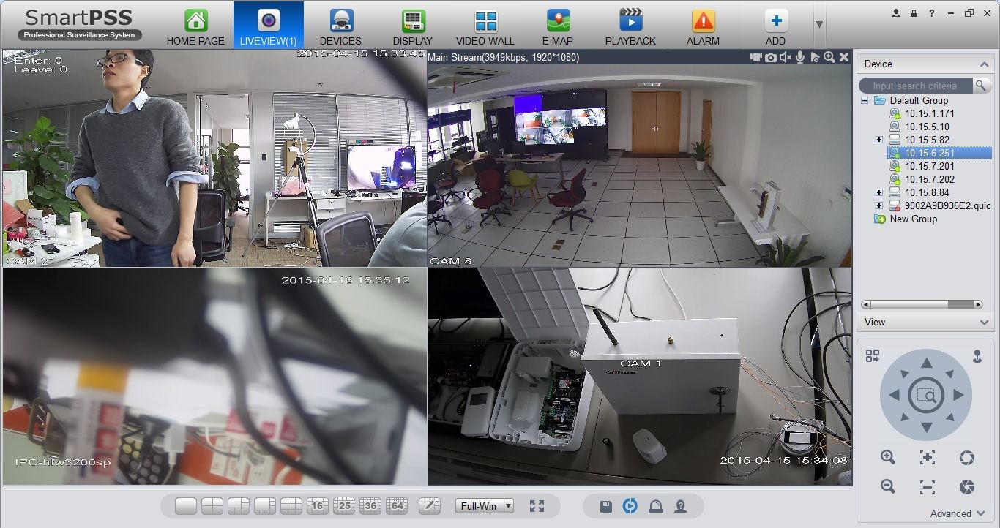

Kit NVR WiFi 720P
Kit de vigilancia IP inalámbrica de Dahua, NVR4104WKIT con diseño WiFi. Este kit profesional soporta la grabación de alta definición y la reproducción en resolución hasta 720P (1280×720) en 25 / 30fps.
Configure y use
Configuración sin alguna complicación. Fácil conexión (función WPS).
Alta definición
Transmisión de imagen en tiempo real en alta definición 720P. Todos los canales de video en grabación y reproducción.
Cuando sea y donde sea.
Con el uso de la aplicación DMSS de Dahua, puede monitorear su hogar y familia cuando sea, incluso a millas de distancia mediante la función P2P del NVR Wifi de este Kit.
Larga distancia.
Innovadora tecnología de transmisión WiFi de Dahua con una transmisión de video estable a 2Mbps de ancho de banda entre cámaras y NVR Wifi, la distancia de transmisión aproximada es de 50m (Campo abierto).
Incluye
- 1 NVR NVR4104W.
- 4 cámaras IP IPCHFW1000SW36.
- 4 fuentes de alimentación.
Este kit contiene todo lo necesario para configurar un sistema de vigilancia IP inalámbrica completa.
 NVR4104W grabadora de video de red puede conectar hasta cámaras 4 IP, grabación de video en la resolución 1080P en 25 / 30fps. Soporta audio bidireccional. Este NVR soporta un disco duro SATA y el tamaño máximo de almacenamiento es 4TB. Con salida de video VGA y HDMI para interfaces de video local.
Características principales del NVR:
- Hasta 4 canales de cámaras IP.
- H.264/MJPEG.
- Máx ancho de banda de entrada 80Mbps.
- HDMI/VGA.
- Soporta múltiples marcas de cámaras IP: Dahua, Arecont Vision, AXIS, Bosch, Brickcom, Canon, CP Plus, Dynacolor, Honeywell, Panasonic, Pelco, Samsung, Sanyo, Sony, Videotec, Vivotek and etc.
- ONVIF versión 2.4.
- Posicionamiento 3D inteligente con PTZ DAHUA.
- Soporta 1 SATA HDD hasta 4TB, 2 USB2.0.
- Web viewer, CMS(DSS/Smart PSS) y Smart Phone(DMSS).
La cámara IPCHFW1000SW36 cuenta con una resolución de video de 1 megapíxel proporcionando video en alta definición 720p (1280×720) en tiempo real (30FPS), la resolución es mayor a la proporcionada por una cámara D1.
Características principales de la cámara:
- 1/3” 1 Megapíxel escaner progresivo CMOS.
- H.264 & MJPEG.
- Máx 25/30fps@720P(1280X720).
- DWDR, día/noche(ICR), AWB, AGC, BLC.
- Múltiple monitoreo de red: Web viewer, CMS(DSS/PSS) & DMSS.
- Lente fijo 3.6mm.
- Máx. distancia de Leds IR 30m.
- Wifi.
- IP66, DC12V./li>
Aplicaciones
WIFI.
La cámara IPCHFW1000SW36 cuenta con tecnología wifi (802.11 b/g) el cual le permite transmitir video sin necesidad del cable de datos.

ONVIF.
Cuenta con ONVIF el cual está basado en sistemas de video, streaming, configuración de video, entre otras características. La marca DAHUA como líder de la industria es un miembro completo de ONVIF junto con otras marcas, existen diferentes niveles de miembros de ONVIF observador, usuario, contribuidor y el máximo nivel que es miembro completo de ONVIF que es el caso de DAHUA.
MONITOREO A TRAVÉS DE SMART PSS.
El Smart PSS es un software de gestión de dispositivos que puede soportar todos los productos de seguridad Dahua. Smart PSS es ampliamente utilizado en la mayoría de los sistemas de vigilancia y de intercomunicación Dahua en pequeños y medianos proyectos. Smart PSS mantiene la facilidad de uso fácil, así como una gran funcionalidad. Vigilar, revisar material de archivo, búsqueda inteligente, alarmas inteligentes, seguimiento inteligente, cada funcionalidad está a su disposición de forma gratuita.

MONITOREO A TRAVÉS DE CELULARES Y TABLETAS.
Puede ser monitoreada a través de dispositivos móviles y tabletas con sistemas operativos IOS y ANDROID con el cual no sólo podrán ver sus cámaras en tiempo real (4, 8, 9,16 cámaras al mismo tiempo), si no también reproducción de grabaciones y manipular PTZ entre otras funciones.